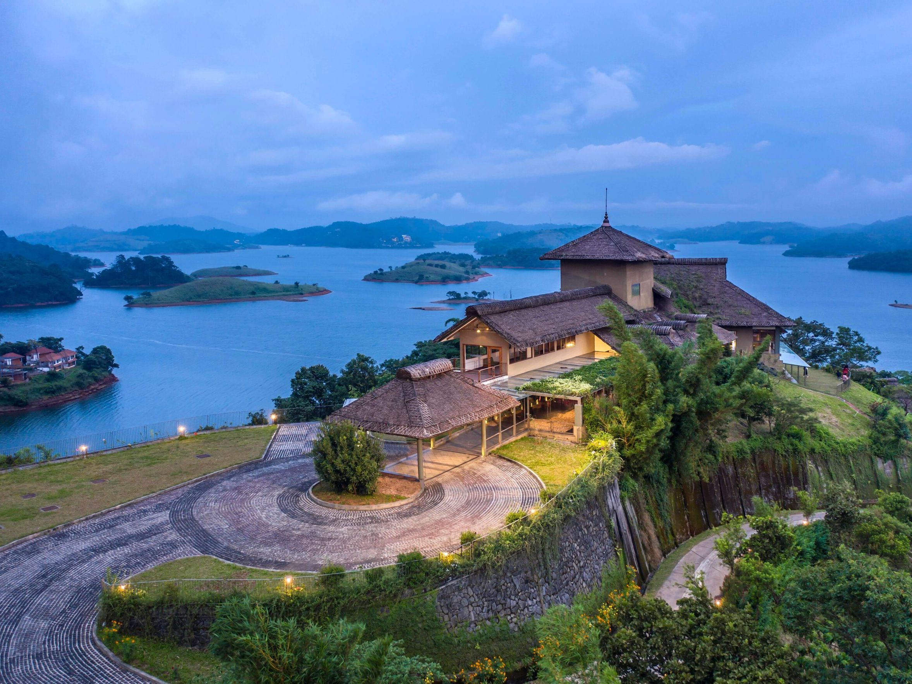

Alleppey Backwaters
Known as the "Venice of the East," Alleppey offers scenic houseboat cruises through tranquil backwaters.
READ MORE »
Munnar
A breathtaking hill station with lush tea plantations, rolling hills, and cool misty weather.
READ MORE »
Kovalam Beach
One of the most famous beaches in Kerala, perfect for relaxation, surfing, and Ayurvedic retreats.
READ MORE »
Thekkady
Home to Periyar Wildlife Sanctuary, Thekkady is a paradise for nature lovers and adventure seekers.
READ MORE »

Wayanad
A serene district with waterfalls, caves, wildlife sanctuaries, and spice plantations in abundance.
READ MORE »
Athirapally Falls
Often called the "Niagara of India," Athirapally is the largest waterfall in Kerala and a must-visit spot.
READ MORE »